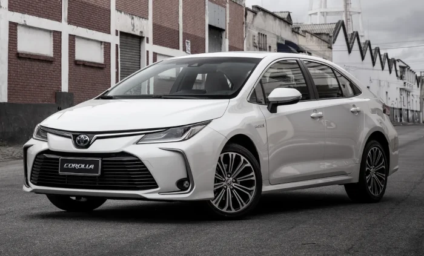

TOYOTA FUNDAÇÃO
Toyota Motor Corporation (TMC) é um fabricante automotivo japonês com sede na Toyota, província de Aichi, no Japão. Em março de 2014, a corporação multinacional era composta por 338 a 875 funcionários em todo o mundo e, em fevereiro de 2016, era a 13.ª maior empresa do mundo por receita. A Toyota foi o maior fabricante de automóveis em 2012 (por produção) à frente do Grupo Volkswagen e da General Motors. Em julho desse ano a compania relatou a produção de seu veículo número 200 milhões. Toyota é a primeira fabricante de automóveis do mundo a produzir mais de 10 milhões de veículos por ano. Fez isso em 2012 de acordo com a OICA, e em 2013 de acordo com dados da empresa. Em julho de 2014, era a maior empresa listada no Japão por capitalização de mercado (vale mais do que o dobro da segunda classificada, a SoftBank) e por receitas. Saiba mais em https://pt.wikipedia.org/wiki/Toyota_Motor
TOYOTA COROLLA GR-SPORT

As duas letras entre os nomes da fabricante e do modelo se referem à Gazoo Racing, divisão de carros de alta performance da Toyota, criada pelo neto do fundador e presidente do conselho de administração da empresa, Akio Toyoda Além de executivo, ele também é piloto e ajudou na criação do Corolla que você vê na imagem.
TOYOTA COROLLA CROSS GR-S

O Toyota Corolla Cross é um SUV crossover de segmento C("médio" no Brasil) produzido pela montadora japonesa Toyota desde 2020. Adotando o nome do Corolla, ele se posiciona como uma alternativa mais prática e maior ao C-HR e construído na mesma plataforma TNGA-C (GA-C) do Corolla da série E210. Por tamanho, o Corolla Cross está posicionado entre o menor C-HR com o qual o Corolla Cross compartilha a plataforma e o maior RAV4 na linha global de SUVs crossover da Toyota.
TOYOTA COROLLA
O Toyota Corolla é um modelo de segmento C ("médio" no Brasil) da Toyota oferecido em versões sedan, hatchback e perua. Também é o modelo mais vendido da história com produção nos cinco continentes e vendas totais superiores a 50 milhões de automóveis desde seu lançamento, em 1966. Seu nome provém do Latim e o significado é “Coroa de Flores”, que por sua vez significam felicidade e triunfo. Ao adotar este nome, a Toyota manteve uma tradição da época em que muitos dos nomes dos seus carros começavam por “C” Crown, Corona, Carina, Century, Celica, Camry etc. Apesar da Toyota já não utilizar esta estratégia para dar nomes aos carros, nomes como o Yaris, Auris, Avalon, Etios e Avensis, todos eles derivam ainda do Latim.
TOYOTA GR COROLLA

O primeiro Corolla esportivo do Brasil chegou ao mercado, com carroceria hatchback e nomenclatura GR, de Gazoo Racing. Está disponível em duas versões, com motor 1.6 turbo e tração nas 4 rodas. Motor e Transmissão: Seu motor é de 3 cilindros 1.6 turbo de 305 cv e 37 kgfm e a transmissão é manual de 6 velocidades, com tração integral permanente GR-FOUR. Ele vai de 0-100 km/h em 5,5 segundos e atinge 230 km/h de velocidade máxima.
TOYOTA YARIS HATCH

O Toyota Vitz (ou Yaris) é um carro hatchback compacto (segmento B) da Toyota. A primeira geração é de 1999 até 2005, a segunda de 2005 até 2011 e a terceira geração de 2010 até hoje. O modelo é chamado de Vitz no Japão e de Yaris no resto do mundo. Seus principais méritos são o design moderno e o baixo consumo de combustível. Seu concorrente direto é o Honda Fit.